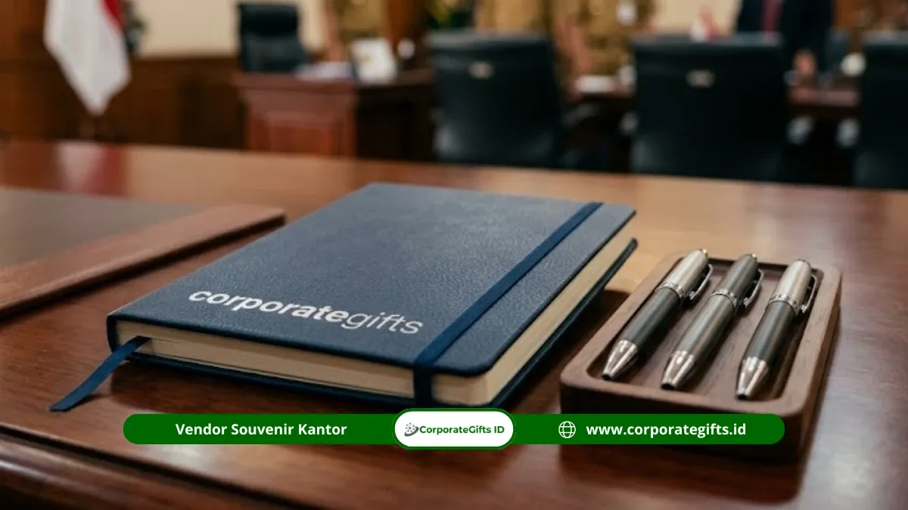

Signifikansi Souvenir Mitra Sekolah Negeri dalam Relasi Kelembagaan
Corporate Gifts ID - Souvenir mitra sekolah negeri adalah produk apresiasi profesional yang diberikan oleh atau kepada instansi, organisasi, perusahaan swasta, dan lembaga yang memiliki status kerja sama resmi (MoU) dengan sekolah negeri di Indonesia. Souvenir ini berfungsi sebagai simbol relasi kelembagaan yang formal, memperkuat identitas mitra, serta meningkatkan citra profesional dalam hubungan kerja sama pendidikan yang berkelanjutan.
Dalam konteks ekosistem pendidikan modern, sekolah negeri - khususnya SMK dan SMA negeri - semakin aktif menjalin kemitraan strategis dengan Dunia Usaha dan Dunia Industri (DUDI). Souvenir kemitraan bukan lagi sekadar cinderamata seremonial pelengkap, melainkan aset representasi yang menandai ikatan formal kedua belah pihak.
Pihak yang Membutuhkan Souvenir Kemitraan Sekolah
Pengadaan souvenir mitra sekolah negeri biasanya dibutuhkan oleh berbagai pihak yang terlibat dalam kemitraan lintas sektor:
- Perusahaan Swasta & Industri (DUDI): Yang menerima program Praktik Kerja Lapangan (PKL), magang industri guru, atau rekrutmen lulusan vokasi.
- Instansi Pemerintah Daerah & BUMN: Yang memberikan bantuan pembinaan sarana pendidikan, program CSR, atau beasiswa vokasi.
- Lembaga Pelatihan & Sertifikasi Profesi: Yang berkolaborasi menyelenggarakan uji kompetensi keahlian (UKK) atau kurikulum industri.
- Perguruan Tinggi Negeri & Swasta: Yang mengadakan pengabdian masyarakat, penelitian bersama, atau program guru penggerak.
- Yayasan Pendidikan & Organisasi Nirlaba: Yang mendanai fasilitas literasi atau penguatan karakter siswa.
5 Kategori Souvenir Profesional untuk Mitra Sekolah Negeri
Memilih produk cinderamata wajib mempertimbangkan fungsi representasi formal dan nilai guna jangka panjang:
- Plakat dan Penghargaan Kelembagaan: Plakat kayu berpadu kuningan etsa atau akrilik optik kristal sangat ideal untuk seremoni penandatanganan nota kesepahaman (MoU), perpisahan masa kerja sama, atau pameran karya. Plakat ini bernilai arsip tinggi dan biasanya dipajang di ruang tamu kepala sekolah atau kantor mitra.
- Alat Tulis dan Perlengkapan Kantor Berlogo: Pulpen metal eksklusif grafir, buku agenda kulit hard cover emboss dual-logo, serta folder dokumen kulit sintetis sangat efektif untuk rapat koordinasi rutin tahunan.
- Merchandise Tekstil Berbranding: Totebag kanvas heavy duty, jaket bomber pelindung, atau kemeja polo katun bersulam rapi menjadi pilihan praktis untuk program berdurasi panjang seperti guru tamu industri.
- Produk Unggulan Vokasi dan Kerajinan Daerah: Memadukan produk olahan hasil karya siswa kejuruan dengan kemasan premium hardbox CorporateGifts.ID memberikan nilai emosional yang tinggi.
- Peralatan Digital Ringan: USB flash disk berbentuk kartu nama, slim powerbank 10.000 mAh, atau smart tumbler LED indikator suhu sangat digemari kalangan praktisi industri dan akademisi.

Pilihan plakat penghargaan akrilik kayu dan paket seminar kit dual logo untuk seremoni MoU sekolah negeri.
Tabel Matriks Kategori Souvenir Mitra Sekolah Berdasarkan Momentum
Panduan praktis menentukan cinderamata berdasarkan momentum acara kerja sama:
| Momentum Kerja Sama | Rekomendasi Item Cinderamata | Standar Personalisasi Logo | Nilai Strategis Kelembagaan |
|---|---|---|---|
| Penandatanganan MoU Resmi | Plakat Kayu Logam & Luxury Executive Pen | Dual-logo grafir laser & beludru box | Kredibilitas arsip protokoler jangka panjang |
| Program Guru Tamu & Praktisi | Executive Gift Set (Tumbler + Leather Planner) | Deboss logo sekolah & inisial nama praktisi | Penghargaan personal atas transfer ilmu |
| Pelepasan Siswa Magang / PKL | Paket Seminar Kit & Totebag Kanvas | Sablon presisi warna resmi korporat | Mempererat relasi pembimbing industri DUDI |
| Ulang Tahun & Dies Natalis Sekolah | Hampers Eco-Friendly & Smart Tumbler | Custom sleeve kotak & barcode portofolio | Memperluas citra positif ke stakeholder publik |
Faktor Kunci Pemilihan & Kepatuhan Regulasi Pengadaan (Perpres 16/2018)
Pengadaan barang cinderamata di lingkungan institusi pemerintah wajib mematuhi kaidah administrasi negara. Bagi instansi negeri yang menggunakan dana BOS, BOP, atau APBD, proses pengadaan harus mengacu pada Peraturan Presiden Nomor 16 Tahun 2018 beserta perubahannya.
Aspek penting mencakup kepatuhan batas kewajaran harga, tersedianya Surat Pesanan (SP), kelengkapan Berita Acara Serah Terima (BAST), serta kemampuan vendor menerbitkan Faktur Pajak resmi (PPN & PPh). CorporateGifts.ID siap mendukung dokumen administratif lengkap untuk memudahkan proses pertanggungjawaban SPJ keuangan sekolah Anda.
Kesalahan Fatal dalam Pengadaan yang Wajib Dihindari
Hindari beberapa kendala umum yang sering terjadi pada kepanitiaan acara:
- Brief Visual Logo Tidak Beresolusi Tinggi: Mengirimkan file logo dalam format JPG beresolusi rendah yang menyebabkan hasil cetak buram atau pecah. Selalu siapkan format vektor (AI, EPS, PDF, atau CDR).
- Pesanan Terlalu Mepet (Lead Time Kurang): Memesan souvenir kustom rumit hanya 3 hari sebelum acara seremonial, yang berisiko mengurangi kerapian finishing.
- Ketidakseimbangan Komposisi Logo: Ukuran logo mitra jauh lebih kecil atau tertutupi oleh logo sekolah, sehingga menimbulkan kesan kurang menghargai kedudukan mitra.
Tips Praktis Memesan Souvenir Mitra Lembaga
Lakukan pemesanan minimal 14 hingga 21 hari kerja sebelum tanggal acara. Mintalah digital proofing 3D gratis untuk memastikan tata letak dual-logo, penulisan nama pejabat penandatangan, serta kesesuaian palet warna sebelum vendor memulai proses produksi massal.
Kesimpulan Praktis
Souvenir mitra sekolah negeri adalah jembatan komunikasi fisik yang memperkokoh komitmen sinergi dunia pendidikan dengan institusi luar. Dengan kurasi produk yang tepat, kepatuhan tata kelola administrasi, dan sentuhan kemasan elegan, hubungan kemitraan sekolah akan terjalin semakin kokoh dan saling menguntungkan dalam jangka panjang.
Konsultasikan kebutuhan cenderamata kemitraan sekolah dan MoU instansi Anda bersama tim CorporateGifts.ID. Ajukan penawaran harga resmi melalui form permintaan penawaran (RFQ) atau jelajahi opsi pada Paket Seminar Kit kami.
Pertanyaan yang Sering Diajukan (FAQ)

Ditulis oleh: Arinda Zakia
Senior Corporate Gifting SpecialistSpesialis kurasi souvenir eksekutif, cenderamata kelembagaan, dan strategi gifting korporat profesional di CorporateGifts.ID.
Lihat Profil Lengkap & Panduan Lainnya